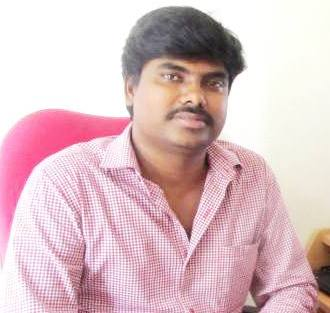

Dr. Jeyakumar Kandasamy

About Me
I am basically from Tamil Nadu, India where I completed schooling and bachelor degree in my hometown Namakkal. In 2000, I moved to University of Madras (Guindy Campus), Chennai for my Master degree. After finishing MSc in 2003, I have joined to the group of Prof. Dillip Kumar Chand, Department of Chemistry, IIT Madras for PhD and completed in June 2008. In October 2008, I moved to the Prof. Timor Baasov group in Technion-Israel for postdoctoral studies. At the beginning of 2012 I have joined with Prof. Peter H. Seeberger in Max-Planck Institute of colloids and interfaces, Berlin, Germany for second postdoctoral studies. In June 2014, I have moved to IITBHU where I am currently serving as assistant professor in the Department of Chemistry. My research focuses is organic synthesis covering catalysis, methodology, and oligosaccharide synthesis.
Recent Publications
- Nonaka, M.; Bao, X. Matsumura, F.; Götze, S.; Kandasamy, J.; Broide, D. H.; Nakayama, J.; Seeberger, P. H.; Fukuda M. "An unusual di-sulfated Iduronic acid attenuates asthmatic response in mice by interfering chemokine-heparan sulfate-mediated T cell recruitment" Proc. Natl. Acad. Sci. (USA), 2014,111, 8173-8178.
- Hurevich, M.; Kandasamy, J.; Ponnappa, B. M.; Kopetzki, D.; McQuade, T.; Seeberger, P. H. "Continuous Photochemical Cleavage of Linkers for Solid Phase Synthesis", Org. Lett., 2014, 16, 1794-1797.
- Gunn, G.; Dai, Y.; Du, M.; Belakhov, V.; Kandasamy, J.; Schoeb, T.; Baasov, T.; Bedwell, D. "Long-Term Nonsense Suppression Therapy Moderates MPS I-H Disease Progression" Molecular Genetics and Metabolism, 2014, 111, 374-381.
- Kandasamy, J.; Schuhmacher, F.; Hahm, H.S.; Klein, J. C.; Seeberger, P. H. "Modular automated solid phase synthesis of dermatan sulfate oligosaccharides" Chem. Commun., 2014, 50, 1875-1877.
- Kandasamy, J.; Hurevich, M.; Seeberger, P. H. "Automated solid phase synthesis of oligoarabinofuranosides". Chem. Commun., 2013, 49, 4453-4455. (Cover Page)
- Keeling, K.; Wang, D.; Dai, Y.; Srinivasan, M.; Chenna, B.; Clark, J.; Belakhov, V.; Kandasamy, J.; Velu, S.; Baasov, T.; Bedwell, D. "Attenuation of nonsense-mediated mRNA decay enhances in vivo nonsense suppression". PLoS One, 2013, 8, e60478.
- Shalev, M.; Kandasamy, J.; Skalka, N.; Belakhov, V.; Rosin-Arbesfeld, R.; Baasov, T. "Development of generic immunoassay for the detection of a series of aminoglycosides with 6'-OH for the treatment of genetic diseases in biological samples". J. Pharmaceut. Biomed. Anal. 2013, 75, 33-40.
- Kandasamy, J.; Glikin, D.; Shulman, E.; Shapira, K.; Shavit, M.; Belakhov, V.; Baasov, T. "Increased selectivity towards cytoplasmic versus mitochondrial ribosome confers improved efficiency of synthetic aminoglycosides in fixing damaged genes: A strategy for treatment of genetic diseases caused by nonsense mutations". J. Med. Chem. 2012, 55, 10630-10643.
- Wang, D.; Belakhov, V.; Kandasamy, J.; Baasov, T.; Li, S-C.; Li, Y-T.; Bedwell, D. M.; Keeling K. M. "The designer aminoglycoside NB84 significantly attenuates biochemical defects associates with MPS I-H in the Idua-W392X mouse". Molecular Genetics and Metabolism, 2012, 105, 116-125.
- Kandasamy, J.; Glikin, D.; Belakhov, V.; Baasov, T. "Repairing faulty genes by aminoglycosides: Identification of new pharmacophore with enhanced suppression of diseases-causing nonsense mutations". Med. Chem. Commun., 2011, 2, 165-171 (Highlighted in "RSC-Chemistry World" as HOT paper).
- Pokrovskaya, V.; Nudelman, I.; Kandasamy, J.; Baasov, T. "Aminoglycosides: Redesign strategies for improved antibiotics and compounds for treatment of human genetic diseases". Methods in Enzymology, 2010, 21, 437-462.
- Jeyakumar, K.; Chakravarthy, R. D.; Chand, D. K. "Simple and efficient method for the oxidation of sulfides to sulfones using hydrogen peroxide and a Mo(VI) based catalyst". Catal. Commun. 2009, 10, 1948-1941.
- Jeyakumar, K.; Chand, D. K. "Application of molybdenum(VI) dichloride dioxide (MoO2Cl2) in organic transformations". J. Chem. Sci. 2009, 121, 111-123. [Highlighted in Cover Page].
- Jeyakumar, K.; Chand, D. K. "Molybdenum(VI) dichloride dioxide catalyzed oxidation of β-hydroxycarbonyls to ?-bromo 1,3-dicarbonyls by N-bromosuccinimide". Synthesis, 2009, 306-310.
- Jeyakumar, K.; Chand, D. K. "Molybdenum(VI)/copper(II)- An efficient bimetallic catalyst for aerobic oxidation of alcohols". Open Catal. J. 2008, 1, 6-11. [Invited article by the editor].
- Jeyakumar, K.; Chand, D. K. "Molybdenum(VI) dichloride dioxide catalyzed synthesis of β-ketoesters by C-H insertion of ethyl diazoacetate into aldehydes". Synthesis, 2008, 1685-1687.
- Jeyakumar, K.; Chand, D. K. "Ring opening reactions of epoxides catalyzed by molybdenum(VI) dichloride dioxide". Synthesis, 2008, 807-819.
- Jeyakumar, K.; Chand, D. K. "Copper perchlorate: Efficient acetylation catalyst under solvent free conditions". J. Mol. Catal. A: Chem. 2006, 255, 275-282.
- Jeyakumar, K.; Chand, D. K. "Selective oxidation of sulfides to sulfoxides and sulfones at room temperature using H2O2 and a Mo(VI) salt as catalyst". Tetrahedron Lett., 2006, 47, 4573-4576. (> 85 times cited)
- Jeyakumar, K.; Chand, D. K. "Aerobic oxidation of benzyl alcohols by Mo (VI) compounds". Appl. Organometal. Chem. 2006, 20, 840-844.
- Chand, D. K.; Manivannan, R.; Sahoo, H. S.; Jeyakumar, K. "Self-assembly by ligand-exchange reactions". Eur. J. Inorg. Chem. 2005, 3346-3352.
Book Chapter
- Hurevich, M.; Kandasamy, J.; Seeberger, P. H. "Automated Techniques for Carbohydrate Synthesis". 2013, Glycochemical Synthesis: Strategies and Applications, (edited by Prof. Shang-Cheng Hung) (Publisher: Wiley)
Patent
- Baasov, T.; Glikin, D.; Kandasamy, J.; Belakhov, V. "Preparation of aminoglycosides and uses thereof in treating genetic disorders and as antibacterial agents". PCT Int. Appl. (2012), WO 2012066546 A1 20120524.
Academic Profile
-
Academic Profile
- Ph.D. [with Prof. Dillip K. Chand]: IIT-Madras [2004-2008]
- M.Sc.: University of Madras. [2003]
- B.Sc.: A. A. G. A. College, Namakkal. [2000]
-
Professional Profile
- Assistant Professor: Indian Institute of Technology (Banaras Hindu University) Varanasi [June 2014-Till date]
- Post Doctoral Fellow [with Prof. Timor Baasov]: Technion-Israel Institute of Technology, Haifa, Israel [2008-2011]
- Post Doctoral Fellow [with Prof. Peter. H. Seeberger]: Max Planck Institute of Colloids and Interfaces (MPIKG), Berlin, Germany [2012-2014]
Research Interests
- Our research group is currently focused on the development of new methodologies using metal catalysts for general organic synthesis and carbohydrate synthesis. Current areas of interest of our laboratory include metal catalysed oxidation/reduction reactions, glycosylation reactions, cross-coupling reaction, and oligosaccharide synthesis.
Awards and Honours
- Euroglycoscience Award: European young investigator workshop-France. 2011
- Schulich Postdoctoral Fellowship (Technion, Israel): -Oct. 2008 -Sep-2011
- Council of Scientific and Industrial Research (CSIR):- 2004 (CSIR-JRF&SRF)
- Graduate Aptitude Test in Engineering (GATE): -2004 (95.01 percentile)
- Topper in Comprehensive Exam in IITMadras-2005
Contact Me
- jeyakumar.chy@iitbhu.ac.in
- 09794516773
08098261085 - Department of Chemistry Indian Institute of Technology (Banaras Hindu University) Varanasi - 221 005